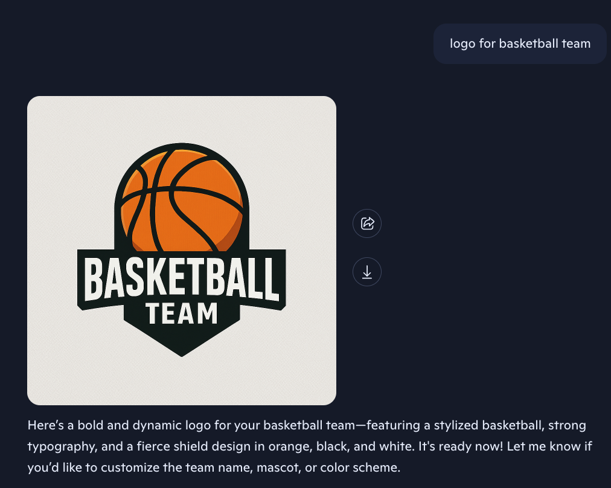
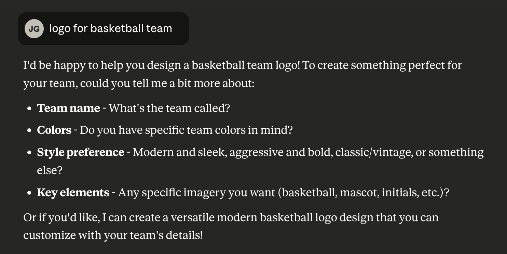
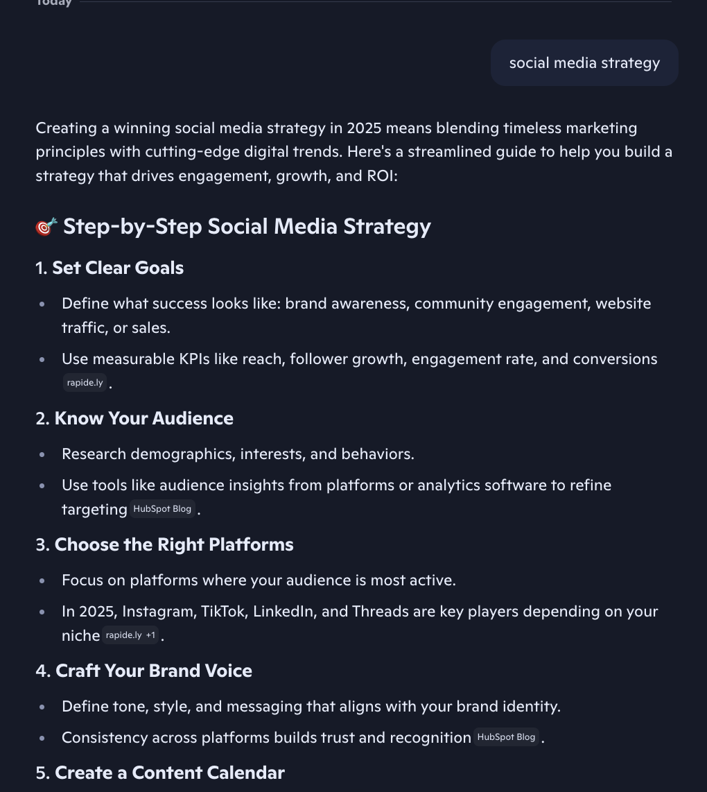
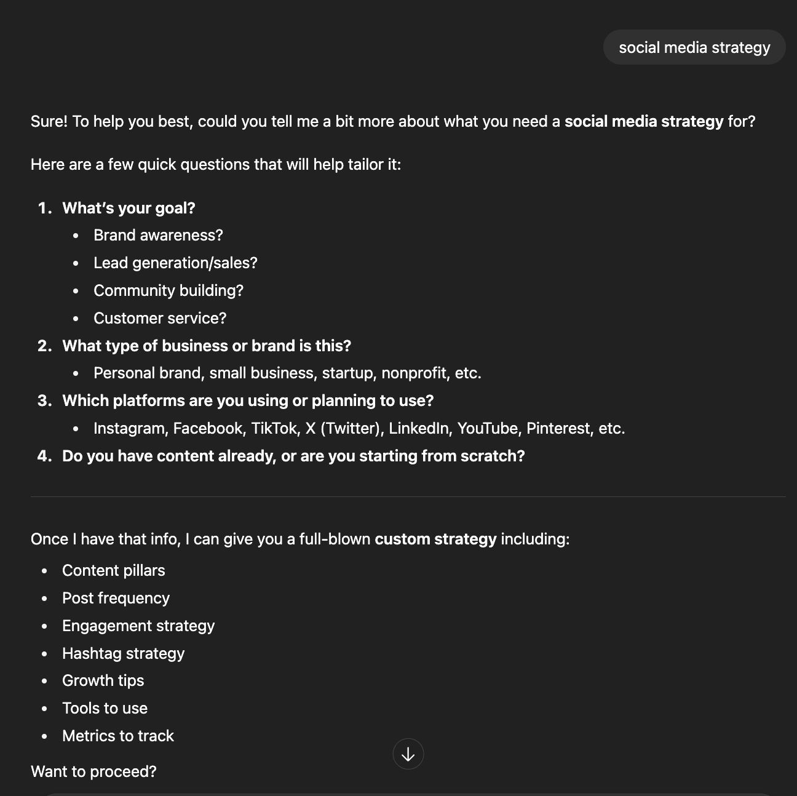
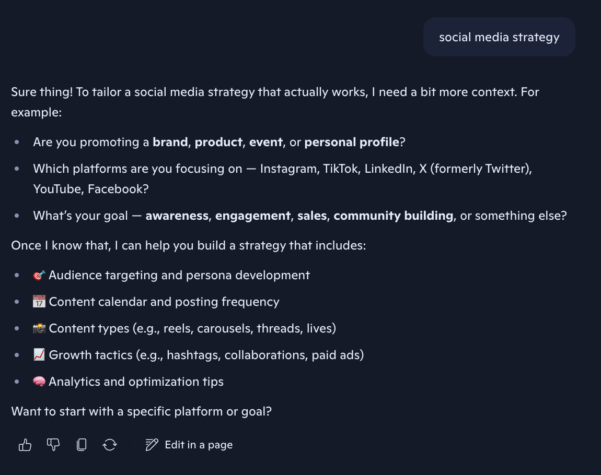
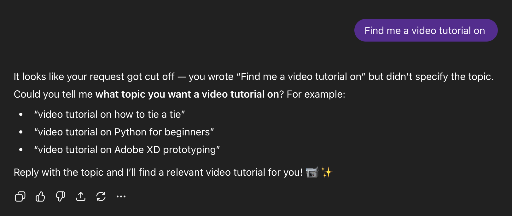
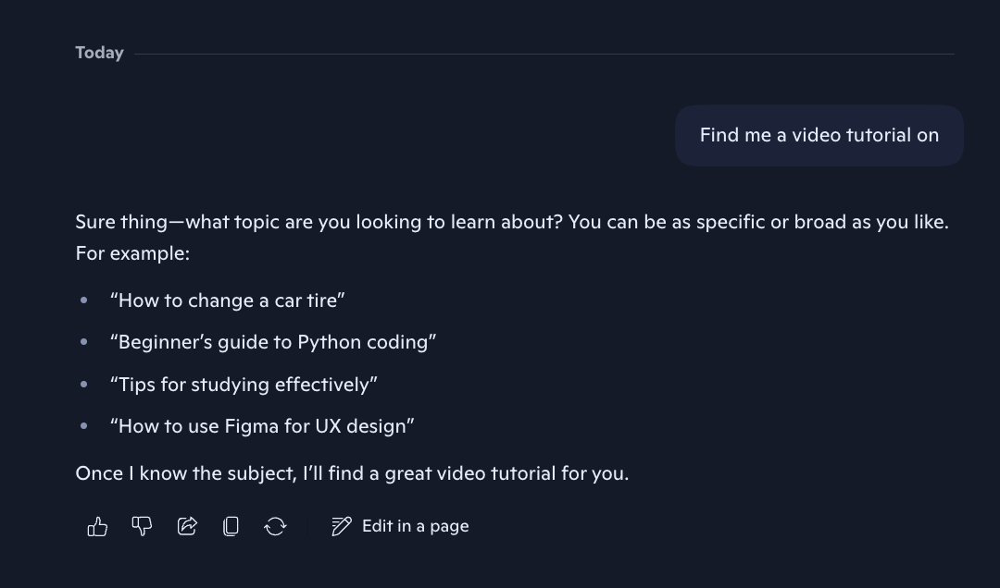

Low intent patch
Teaching Copilot to ask more clarifying questions when user intent is ambiguous, improving conversational depth and retention.
Problem
30% of Copilot's weekly active users only sent one message. Log inspection showed that these users would often churn because their initial "low intent" queries—vague fragments like "marketing plan" or single words like "email"—force the model to guess, leading to a poor first experience. Week 1 retention was 8% on web and 14% on Windows.
We also had qualitative UXR suggesting that users expect Copilot to demonstrate "conversational leadership" by guiding interactions toward meaningful outcomes.
Solution
We needed to teach Copilot to be better at recognizing low intent queries and asking clarifying questions to give more tailored answers. We knew that if users followed up in the same conversation after their initial message, they were more likely to come back for a second session and retain the following week. Week 1 retention for users who sent multiple messages in their initial session was 14% overall, as opposed to 5% for single-message users.
My key contributions
Prompt engineering
I owned prompt engineering and evals E2E for this patch. First, I started with log inspection to build a data set to run evals over. Because user logs are sensitive, I created a synthetic data set of low intent queries based on broad themes I saw during log inspection, including:
- Vague verbs: "fix," "make it better"
- Fragmented phrases: "social media strategy", email template"
- Missing objects: "summarize," "create an image of"
- Incomplete suggestion chip prefill: At the time, we showed suggestion chips beneath the composer that would populate the composer with a partially-prefilled query that users could complete (i.e. "Help me draft an email to "). Many users would not realize these queries were incomplete and send them as-is.
I also included negative cases (i.e. "How tall is Mount Everest?") that wouldn't require clarification. After I built the dataset, I then wrote a scorer prompt that 1) determined whether clarification was necessary based on the context and 2) graded outputs on these facets:
- Lack of guessing: The model doesn't try to invent specifics or make assumptions about missing details.
- Lack of generic filler The model is concise and purposeful, omitting boilerplate language like "Let me know more" or "I'm here to help."
- Clarifying questions: The model asks specific and relevant clarifying questions.
- Concrete examples If helpful, the model provides 1-2 specific examples demonstrating how different details would lead to different outcomes.
I ran machine evals with my scorer and data set in Braintrust.
~55% was our control without this patch, so nearly 73% was a significant improvement. We observed no significant regressions on leaderboard evals as well, aside from some regressions when it came to memory recall, suggesting that this patch somehow reduced the likelihood of the model searching over memory. We noted this as a non-blocking risk and still ran the experiment.
Outputs
| Before | Competitor | After |
|---|---|---|
|

|

|

|
|

|

|

|
|
|

|

|
Stakeholder management
This was a challenging patch to get approved by our internal prompt reviewers because, at the time, the org was in a GPU crunch. The initial placement in our responding model prompt that I proposed would've complicated how we were caching the prompt, so I had to experiment with more token-optimized placements, rework the patch, and rerun evals in the span of a few days to make a code freeze deadline.
In the end, I was able to find a placement that still maintained the same improvements and worked with the constraints from our Response Quality team.
Outcomes
This patch was one of only 5 experiments that was able to move 7+ day retention during that cycle (7 weeks), a notoriously tough metric to move.
Because of the scale of Copilot, even small stat-sig movements like this are considered big wins. The success of this patch demonstrated that Growth teams could drive business impact through prompt engineering and helped our team gain credibility in the org.